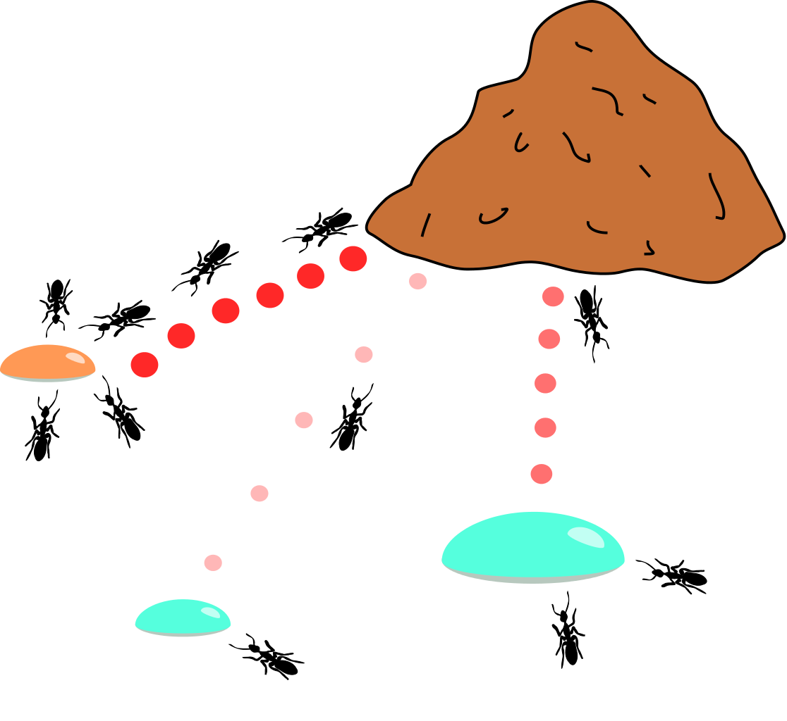
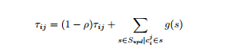
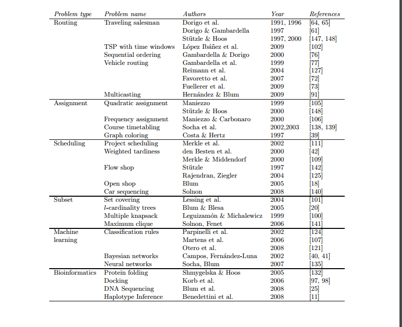

Bio-inspired communication
Definition
Bio-Inspired Computing and Networking explains how the study of biological systems can significantly improve computing, networking, and robotics.
Areas of interest
- Bio-inspired networking
- Bio-inspired algorithms
- Bio-inspired cyber-security
- Bio-inspired systems
- Bio-inspired robotics
Goal
Learn
Build
Show off
Bio-inspired algorithms
- Evolutionary
- Genetic
- Parallel
- Sequential
- Neuroevolution
- Learning classifier system
- Genetic
- Swarm Intelligence
Swarm Intelligence
- Ant colony optimization
- The bees algorithm
- Bat algorithm
- Glowworm swarm optimization
- Gravitational search algorithm
- River Formation Dynamics
Ant Colony Optimization

How does it work?
Probability
Trail
Applications
State-of-the-art
Proposed in 1992 by Dorigo
New extensions:
- Population-based ACO
- Beam-ACO
- Multi-objective Ant Colony Optimization
- Genetic Ant Colony Optimization
Traveling Salesman Problem

Pseudo code
procedure ACO algorithm for TSPs
Set parameters, initialize pheromone trails
while (termination condition not met) do
ConstructSolutions
ApplyLocalSearch % optional
UpdateTrails
end
end ACO algorithm for TSP
Implementation
Python
Visualisation (Web application)
Project roles
- Wojtek: Visualisation, Presenaton No 2
- Dominik: Backend implementaion (ACO), Research
- Eryk: Visualisation, Research
- Adam: Presentation No 1, Backend implementaion(ACO)
Bibliography
- Ant Colony Optimization, 2006
- A CONCISE OVERVIEW OF APPLICATIONS OF ANT COLONY OPTIMIZATION, 2011
- Application of Ant Colony Optimization to Structure-Based Drug Design, 2006
- Ant Algorithms for Discrete Optimization
- Clonal Selection Algorithm for Solving Permutation Optimisation Problems: A Case Study of Travelling Salesman Problem, 2015
- Multi-Objective Ant Colony Optimization Based on the Physarum-Inspired Mathematical Model for Bi-Objective Traveling Salesman Problems
Media Sources:
- http://thebridge.psgtech.ac.in/
- http://xkcd.com/
- http://www.farelli.info/